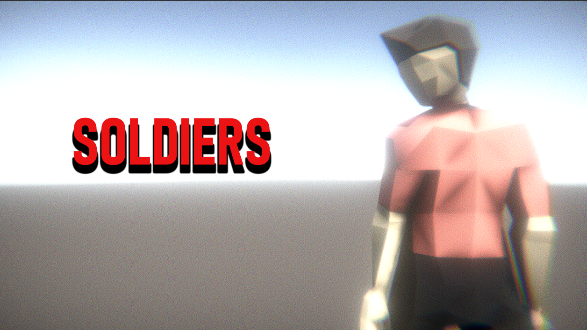

OVERVIEW
<
EX-DRONES: NEXT-GEN IS OUT NOW!
The NEXT-GEN Update has finally arrived, bringing in a brand new EX-DRONES experience like never before. TheSilentHouse_Studio & Cookie Studios, the developers behind the scenes have shared their thoughts and compared the Original EX-Drones, to EX-DRONES with the NEXT-GEN upgrade!
"EX-DRONES is the only project that took us about 4 years to make the game we wanted it to be. We've all been very optimistic for the project there were harsh times, good times, and disasterous moments in this development hell. It was a carousel but we all wanted it to be the game we would look at in the future and say "hey, this is a game that we created afterall". It's a wish that came true. I believe that the NEXT-GEN is a love letter to our EXTERS aka, fans! The original build of the full game back in January 2022 was a simple preview of the full game. It was in an Early Access condition and received criticism which we believe it was all facts about the current project. We came back into the project on December 4th 2022 we decided to come back again as we had some unfinished business with EX-DRONES. Back then we were getting better and better with the programming/coding and we realized how...well, not so well of a UI the game had. You see, originally, NEXT-GEN was all about Enhancing the UI/Menu of the game. It was that time we realized we had a lot to be done. The truth is that we thought it won't take so long so we assumed around in 2023 the upgrade would release. Well, we were wrong. It took us about 2 years to complete it. Personally i am very proud of what the team has accomplished."
- Orpheus, Lead Developer at TheSilentHouse_Studio.
Welcome to 2048
•EX-DRONES is back and better than ever with the NEXT-GEN Update, the game has changed..it's Enhanced, Reworked and Reunited.
•EX-DRONES comes now with NEW Gamemodes, NEW Campaigns, NEW Gameplay, NEW Experience, Fully Optimized With
Brand NEW Content and Many Many Changes. EX-DRONES is now officially a game the community and us ourselves wanted to see becoming.
•With all being said, EX-DRONES' Official Story Campaign is now available, introducing NEW Characters, NEW Enemies, NEW Faces, NEW CHAOS.
Follow the story and interact with the characters and begin your journey into the CHAOS.
•EX-DRONES comes now with NEW Gamemodes, NEW Campaigns, NEW Gameplay, NEW Experience, Fully Optimized With Brand NEW Content and Many Many Changes. EX-DRONES is now officially a game the community and us ourselves wanted to see becoming.
•With all being said, EX-DRONES' Official Story Campaign is now available, introducing NEW Characters, NEW Enemies, NEW Faces, NEW CHAOS.
Follow the story and interact with the characters and begin your journey into the CHAOS.
Did You Know?



Operators of the game! You are captured but you found a way out. This time, things will get a bit messy..

Back to Main Page